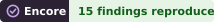

An attempt, step by step
Choose a target
A target is a paper and the public datasets that hold its data. So far attempts have used datasets in the DANDI Archive, CRCNS.org, Dryad, EBRAINS, Figshare and OpenNeuro. Run requests go first, then datasets converted by CatalystNeuro.
Write down the claims
A reader agent reads the paper and records its key findings as claims, each with the numbers it rests on, a tolerance, and the test that will decide it. A second reader checks the claims against the paper. The claims are written before any analysis is run, and the readers never see the data.
Check the data and test each claim
The author checks the dataset against its own description, then writes a notebook that streams the data from the archive and tests each claim. Every claim gets an outcome: reproduced, partially reproduced, not reproduced, or blocked, with the reason. What the author learns about the data along the way is recorded as findings.
First verification
A verifier agent, in a separate run that has not seen the author's reasoning or conclusions, reviews the notebook and the paper and decides its own outcome for each claim. The author then answers each point, revising the analysis where needed.
Second verification
The verifier sees the author's conclusions, checks every sentence of them against the outputs, and says whether it agrees with each outcome. The author revises once more. Any change of outcome proposed after this goes to a third round that reviews only those changes.
Record and publish
The attempt is added to the registry's records. The notebook runs again in a clean environment, and once the checks pass the attempt is merged and appears here.
Where the agents run
Each role runs in GitHub Actions on a fresh machine with no personal configuration. The agent's commands cannot see the credentials it runs on, and a verifier sees only the materials it is given: the repository is removed before it starts. Each run commits its work, its cleaned transcript and its report, so every step can be read afterwards in the transcripts and the agent runs. The pipeline page shows where each paper stands, from the match to its datasets to verification.
Reading an outcome
An outcome says what one attempt could recover from the data in a dataset, with the methods available to it. A failure to reproduce may be a failure of the attempt, and is not a finding that the paper is wrong. Claims that also use data from outside the dataset, or that rest on data the paper deposited in another archive, are counted apart. More on reading outcomes
Repeat attempts
When a dataset changes, for example after its data are corrected, or when the protocol changes, a new attempt can be made on the same paper. Its author does not see the earlier attempt. Once the new attempt is verified, a separate run compares the two and reports, for each earlier finding, whether it is fixed, partly fixed or still present. Earlier attempts stay in the record.
Disagreeing with an attempt
The agents make mistakes. If you are an author of a paper here, or know the data, and think an attempt is wrong, respond to it with the form for authors. Every attempt links to its notebook, its claims and the reasoning behind each outcome.
For authors
Each paper's page and each attempt's page link to a form for responding to the attempt. Once a maintainer confirms who wrote a response, it is shown on the paper's page (how responses are handled). Each author whose ORCID iD the registry knows has a page with their papers, their datasets and their badges. Find yours in the list of authors.
For archives
Each dataset an attempt has used has a page with what the attempts found about its data. The list of datasets has them all. A dataset with findings reproduced from it has a badge, which an archive or the dataset's owner can show on their own page. Each of these datasets also has a JSON file with the same numbers (how to use the badges).
